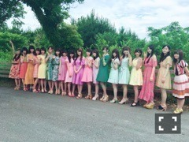

| 2016/08 12 Fri | 斎藤ちはる 小さな幸せ。(´>∀<｀)ゝ |
ちはるーむへようこそ！
欅のねるちゃん。
色が白くてちっちゃくて
可愛かった！
この時以来欅ちゃんには
会ってないな〜(｡･o･｡)ﾉ
今度こそ、みんなに自分から
声かけられるようにしなきゃ！！
見逃しちゃったけど(> <)
Mステ２曲披露お疲れ様でした♪
-------------------------♡
昨日今日、数日前ような
猛暑ではなくてクーラー付けなくても
過ごせる気温でしたね(﹡ˆ ˆ﹡)
少しでも過ごしやすいと
その日1日は少しハッピーになる。
そんな小さい幸せを
毎日感じながら過ごしていたいな( ◦˙ ˙◦ )

15thアンダー１列に整列だよ
それぞれが思い思いのピースとポーズ♪
ひなちまの前で手揃えてるところとか
真洋が腕あげてるとか
琴子のすんってしてるところとか
それぞれの個性が垣間見える！
衣装の色がそれぞれが少しずつ違うから
グラデーションみたいになってて
綺麗。色合い素敵！
この写真見るとなんか夏だな〜って思う(﹡ˆ ˆ﹡)
-------------------------♡
♬ ChihaMusic
「だいだらぼっち」RADWIMPSさん
中学生の時から聞いてる曲。
そして、苦しい時辛い時に
必ず思い出して、思わず口ずさんでしまう。
聞いたり歌ったりすると
元気をもらえるんだ。
歌詞を一語一句間違えないくらい
覚えてる！
ハルジオンみると思い出すのは
今年の春の事と、
やっぱりみんなと同じあの子。
元気かな(> <)
明日からは仙台！！
牛タン、蔵王、笹かま、ずんだ...
沢山美味しいものがあって
私は幸せです(﹡ˆ ˆ﹡)
あ！また見つけた小さな幸せ♡
おやすみ〜
斎藤ちはる